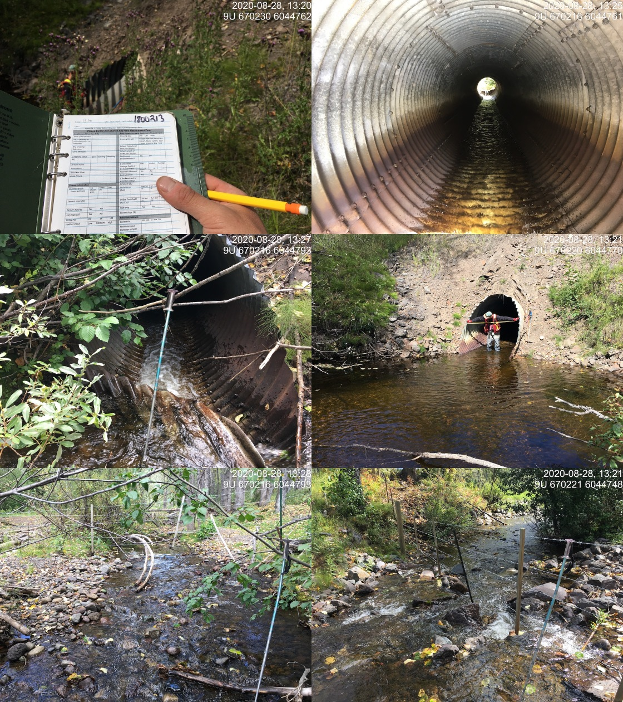
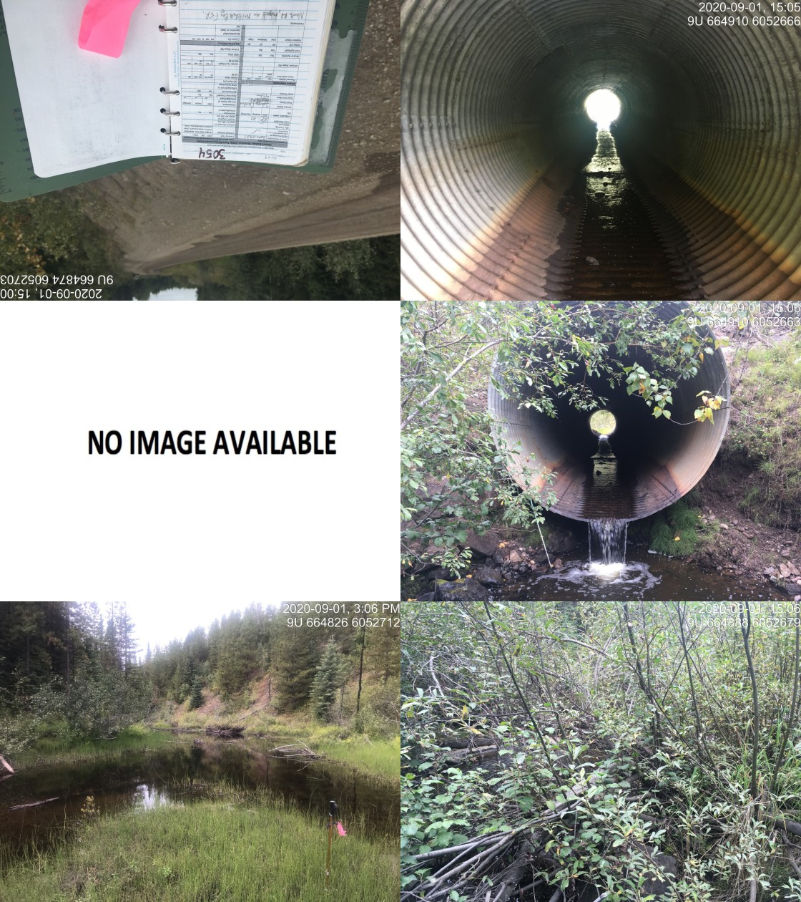

Appendix - 197663 & 3054 - Johnny David Creek
Site Location
PSCIS crossing 197663 is located on Johnny David Creek on Highway 16 approximately 25km east of Houston, BC with the highway located approximately 1km upstream from the confluence with the Bulkley River. Highway 16 is the responsibility of the Ministry of Transportation and Infrastructure.
PSCIS crossing 3054 is located on North road at km 42.4 approximately 10km upstream of Highway 16. North road is the responsibility of FLNR - Nadina Forest District.
Background
The Johnny David Creek creek watershed upstream of the highway is approximately 43.5km2 in area with an estimated 91ha of wetland documented upstream. At the highway, (575m of elevation) Johnny David Creek is a fourth order stream with a maximum watershed elevation of 1300. Fish documented as present downstream of 197663 include coho, chinook, cutthrout, dolly varden, steelhead and rainbow trout (MoE 2020a). Upstream of the crossing, only rainbow trout have been previously documented. One road stream crossing structure is modelled as present approximately 3km upstream of the highway (modelled crossing id 1802089).
The Johnny David Creek creek watershed upstream of 3054 is approximately 13km2 in area with an estimated 71ha of wetland documented upstream. The stream is third order at this location with rainbow trout documented as present upstream (MoE 2020a).
Wilson and Rabnett (2007) recommended that PSCIS crossing 197663 be a high priority for remedial works to backwater the crossing by establishing a series of pools to step up to the outfall pool. A rehabilitation design was prescribed by Gaboury and Smith (2016). Smith (2018) reported that in 2017, the Wet’suwet’en First Nation - Yinka Dene Economic Development Limited Partnership Inc. and LGL Limited constructed three rock riffles and berms on both banks to backwater the stream and raise the outlet pool water level to above the elevation of the base of the culvert.
PSCIS stream crossing 3054 was rated a moderate priority for follow up by Irvine (2018) as it was rated as having moderate value habitat by Casselman and Stanley (2010) and due to significant quantities of stream and wetland habitat modelled upstream. A map of the watershed is provided in map attachment 093L.115.
Stream Characteristics at Crossings 197663 and 3054
At the time of the survey, the 197663 on Highway 16 was un-embedded, non-backwatered and considered a barrier to upstream fish passage according to the provincial protocol. The pipe was 1.75m in diameter with a length of 25m, a culvert slope of 2%, a stream width ratio of 3.6 and an outlet drop of 0m (Table 4.44). The inlet of the culvert was damaged with the metal folded up by incoming debris. Water temperature was 11\(^\circ\)C, pH was 8.1 and conductivity was 186uS/cm.
Crossing 3054 on North road was also un-embedded, non-backwatered and again ranked as a barrier to upstream fish passage. The pipe was 3m in diameter with a length of 40m, a culvert slope of 2%, a stream width ratio of 1.2 and an outlet drop of 0.76m (Table 4.45). Water temperature was 10\(^\circ\)C, pH was 7.5 and conductivity was 85uS/cm.
Stream Characteristics Downstream of 197663
The stream was surveyed downstream from the culvert for 300m (Figure ??). Overall, total cover amount was rated as moderate with large woody debris dominant. Cover was also present as small woody debris, undercut banks, deep pools, and overhanging vegetation (Table 4.46). The average channel width was 5.3m, the average wetted width was 3.3m and the average gradient was 2.6%. The dominant substrate was cobbles with boulders subdominant. Abundant gravels suitably sized for coho, rainbow and steelhead spawning were present. Habitat was rated as high as it was considered an important migration corridor with moderate value habitat for fry/juvenile salmonid rearing.
Stream Characteristics Upstream of 197663 and downstream of 3054
The stream was surveyed upstream from 197663 for 690m (Figure ??). Within the area surveyed, total cover amount was rated as moderate with undercut banks dominant. Cover was also present as small woody debris, large woody debris, boulders, deep pools, and overhanging vegetation (Table 4.46). The average channel width was 6.6m, the average wetted width was 4.4m and the average gradient was 3%. Abundant gravels and small cobbles suitable for resident, fluvial, adfluvial and anadromous salmonid spawning were present throughout the area surveyed. Habitat value was rated as high for salmonid rearing and spawning.
The stream was surveyed downstream from 3054 for 300m (Figure ??). Within the area surveyed, total cover amount was rated as abundant with undercut banks dominant. Cover was also present as small woody debris, large woody debris, overhanging vegetation, and instream vegetation (Table 4.46). The average channel width was 3.5m, the average wetted width was 2.3m and the average gradient was 3.3%. Some pockets of gravels suitable for resident and anadromous (if present) salmonids were present throughout the area surveyed. Stream gradients were steepest immediately below the FSR then leveled off with a series of three beaver dams. No deep pools were observed downstream of the beaver influenced areas. Habitat value was rated as moderate as it was considered an important migration corridor containing suitable spawning habitat with moderate rearing potential for resident adult or fry/juvenile anadromous salmonid rearing and spawning.
Stream Characteristics Upstream of 3054
Johnny David Creek was surveyed upstream from 3054 for 725m until an area of wetland type habitat (Figure ??). The stream winds through a canyon section for approximately 300m after the first 100m of beaver influenced wetland located directly upstream of the culvert. Within the area surveyed, total cover amount was rated as moderate with large woody debris dominant. Cover was also present as small woody debris, undercut banks, deep pools, and overhanging vegetation (Table 4.46). The average channel width was 2.6m, the average wetted width was 2.1m and the average gradient was 5.3%. Substrate was noted as colored black from periphyton with pockets of gravel suitable for resident (~20cm) salmonids present. A fish observed (~150mm long) was observed above the culvert approximately 100m. Habitat value was rated as moderate for younger life stages of fluvial and anadromous salmonid rearing and resident adult salmonid spawning.
Fish Sampling
To assess potential impacts of the culvert on fisheries values in the stream, electrofishing and minnowtrapping was conducted upstream and downstream of 197663. A total of 30 fish were captured upstream with 60 fish captured downstream (Figure ??). Species captured downstream included coho and rainbow trout iwth coho, rainbow trout and mountain whitefish captured upstream. Electrofishing results are summarized in Tables 4.47 - 4.48 and Figure 4.32 with minnowtrapping results summarized in Table 4.49.
Structure Remediation and Cost Estimate
Structure replacement with bridges for 197663 (10.3m span) and 3054 (31m span) are recommended to provide access to the habitat located upstream. An estimate of cost for replacement of 197663 is $5,150,000 resulting in cost benefits of 1.9 linear m/$1000 and 12.8m2/$1000. An estimate of cost for replacement of 3054 is $388,000 resulting in cost benefits of 19.3 linear m/$1000 and 50.3m2/$1000.
Conclusion
Although no natural barriers to upstream passage are documented within provincial databases on Johnny David Creek upstream of the highway, large waterfalls have been documented within adjacent streams on both sides (Byman Creek and Richfield Creek pers. comm. Jonathan Van Barneveld, Forester - FLNR) at points approximately 6km upstream from the highway. For this reason, there is potential that there exists a natural barrier to fish passage within Johnny David Creek within this same band of slope. Although, the stream was not surveyed at the location of a modelled road stream crossing approximately 3km upstream of the highway (modelled crossing id 1802089), it is suspected that the crossing is not present as the roads in the area appear old and un-maintained in aerial imagery. Future assessment to scope for a natural barrier at approximatley 6km above the highway and to assess the streawm at the location of modelled crossing 1802089 is recommended.
There is 10km of mainstem habitat upstream of crossing 197663 to 3054. Habitat in the areas surveyed immediately upstream of 197663 was rated as high value for salmonid rearing/spawning. Although the sample size is small, the electrofishing results indicate that there are higher densities of coho and rainbow trout downstream of the crossing than above which could be an indication of impact by the structure. Although some works have already been conducted to reduce the impact of the crossing on upstream migration of fish, the culvert is damaged and likely presents a barrier to smaller life stages during moderate to high flows (due to flow velocities) and to large adult fish during low flows (due to shallow flow depths). The crossing was ranked as a high priority for proceeding to design for replacement.
Although there is some potential that there may be a natural barrier downstream of North Road, there is 7.5km of mainstem habitat modelled upstream of 3054. Habitat in the areas surveyed immediately upstream of 3054 was rated as moderate value for salmonid rearing/spawning. FLNR - Nadina Forest District is responsible for North road. The crossing was ranked as a moderate priority for proceeding to design for replacement.
| Location and Stream Data |
|
Crossing Characteristics | – |
|---|---|---|---|
| Date | 2020-08-28 | Crossing Sub Type | Round Culvert |
| PSCIS ID | 197663 | Diameter (m) | 1.75 |
| External ID | – | Length (m) | 25 |
| Crew | KP, AI | Embedded | No |
| UTM Zone | 9 | Depth Embedded (m) | – |
| Easting | 670240.8 | Resemble Channel | No |
| Northing | 6044772 | Backwatered | No |
| Stream | Johnny David Creek | Percent Backwatered | – |
| Road | Highway 16 | Fill Depth (m) | 3 |
| Road Tenure | MoTi highway | Outlet Drop (m) | 0 |
| Channel Width (m) | 6.3 | Outlet Pool Depth (m) | 1.35 |
| Stream Slope (%) | 5.5 | Inlet Drop | Yes |
| Beaver Activity | No | Slope (%) | 2 |
| Habitat Value | High | Valley Fill | Deep Fill |
| Final score | 24 | Barrier Result | Barrier |
| Fix type | Replace with New Open Bottom Structure | Fix Span / Diameter | 10.3 |
| Photos: From top left clockwise: Road/Site Card, Barrel, Outlet, Downstream, Upstream, Inlet. | |||
| Comments: Habitat confirmation and sampling completed. |
| Location and Stream Data |
|
Crossing Characteristics | – |
|---|---|---|---|
| Date | 2020-09-03 | Crossing Sub Type | Round Culvert |
| PSCIS ID | 3054 | Diameter (m) | 3 |
| External ID | – | Length (m) | 40 |
| Crew | KP, AI | Embedded | No |
| UTM Zone | 9 | Depth Embedded (m) | – |
| Easting | 664881 | Resemble Channel | No |
| Northing | 6052688 | Backwatered | No |
| Stream | Johnny David Creek | Percent Backwatered | – |
| Road | North road | Fill Depth (m) | 9.99 |
| Road Tenure | MoTi local | Outlet Drop (m) | 0.76 |
| Channel Width (m) | 3.5 | Outlet Pool Depth (m) | 0.8 |
| Stream Slope (%) | 3.3 | Inlet Drop | No |
| Beaver Activity | Yes | Slope (%) | 2 |
| Habitat Value | Medium | Valley Fill | Deep Fill |
| Final score | 34 | Barrier Result | Barrier |
| Fix type | Replace with New Open Bottom Structure | Fix Span / Diameter | 31 |
| Photos: From top left clockwise: Road/Site Card, Barrel, Outlet, Downstream, Upstream, Inlet. | |||
| Comments: Fill depth approximatley 12m. Fish observed upstream of crossing. |
| Site | Location | Length Surveyed (m) | Channel Width (m) | Wetted Width (m) | Pool Depth (m) | Gradient (%) | Total Cover | Habitat Value |
|---|---|---|---|---|---|---|---|---|
| 3054 | Downstream | 350 | 3.5 | 2.3 | 0.3 | 3.3 | abundant | moderate |
| 3054 | Upstream | 725 | 2.6 | 2.1 | 0.3 | 5.3 | moderate | moderate |
| 197663 | Upstream | 690 | 6.6 | 4.4 | 0.4 | 3 | moderate | high |
| 197663 | Downstream | 300 | 5.3 | 3.3 | 0.5 | 2.6 | moderate | high |
| Site | Location | Width (m) | Length (m) | Area (m2) | Effort (s) | Effort (s/m2) |
|---|---|---|---|---|---|---|
| 53 | Downstream | 3.75 | 5.1 | 19 | 199 | 10.5 |
| 54 | Upstream | 2.50 | 12.7 | 32 | 283 | 8.8 |
| Site | Location | Species | Fry | Parr | Juvenile | Adult |
|---|---|---|---|---|---|---|
| 53 | Downstream | CO | 57.9 | 5.3 | 0 | 0 |
| 54 | Upstream | CO | 0 | 12.5 | 0 | 0 |
| 54 | Upstream | MW | 0 | 3.1 | 0 | 0 |
| 53 | Downstream | RB | 42.1 | 31.6 | 15.8 | 0 |
| 54 | Upstream | RB | 21.9 | 28.1 | 6.2 | 3.1 |
Figure 4.32: Densites of fish (fish/100m2) capture upstream and downstream of PSCIS crossing 197663.
| Location | Species | fry | juvenile | parr |
|---|---|---|---|---|
| Downstream | CO | 14 | 1 | 0 |
| Upstream | CO | 0 | 0 | 2 |
| Downstream | RB | 7 | 1 | 8 |
| Upstream | RB | 0 | 0 | 4 |
Figure 4.33: Left: Typical habitat downstream of PSCIS crossing 197663. Right: Typical habitat downstream of PSCIS crossing 197663.
Figure 4.34: Left: Habitat upstream of PSCIS crossing 197663. Right: Habitat upstream of PSCIS crossing 197663.
Figure 4.35: Left: Coho captured downstream of PSCIS crossing 197663. Right: Coho captured upstream of PSCIS crossing 197663.
Figure 4.36: Left: Habitat downstream of PSCIS crossing 3054. Right: Habitat upstream of PSCIS crossing 197663.